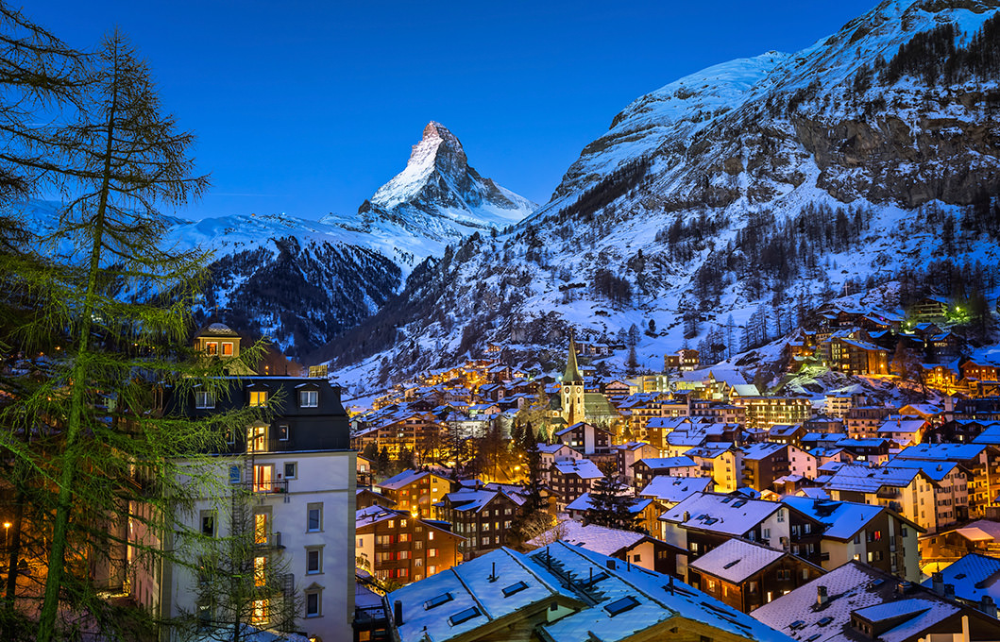

Barcelona
View of Barcelona
Barcelona feels a bit surreal – appropriate, since Salvador Dali spent time here and Spanish Catalan architect Antoni Gaudí designed several of the city’s buildings. Stepping into Gaudí’s Church of the Sacred Family is a bit like falling through the looking glass - a journey that you can continue with a visit to Park Güell. Sip sangria at a sidewalk café in Las Ramblas while watching flamboyant street performers, then create your own moveable feast by floating from tapas bar to tapas bar.
Barcelona is a very old city in which you can feel the weight of history; it is haunted by history. You cannot walk around it without perceiving it.
Carlos Ruiz Zafon
Barcelona: Ciudad Condal
Starting at $599.99
Barcelona is the capital city of the autonomous community of Catalonia in Spain and Spain's second most populated city, with a population of 1.6 million within its administrative limits. Its urban area extends beyond the administrative city limits with a population of around 4.7 million people, being the seventh-most populous urban area in the European Union after Paris, London, Madrid, the Ruhr area, Berlin and Milan. It is the largest metropolis on the Mediterranean Sea, located on the coast between the mouths of the rivers Llobregat and Besòs, and bounded to the west by the Serra de Collserola mountain range, the tallest peak of which is 512 metres (1,680 ft) high.
Sagrada Familia or Passion Facade
Barcelona F.C : Mes que un club
Founded in 1899 by a group of Swiss, English and Catalan footballers led by Joan Gamper, the club has become a symbol of Catalan culture and Catalanism, hence the motto "Més que un club" (More than a club). . It is the second most valuable sports team in the world, worth $3.16 billion, and the world's second richest football club in terms of revenue.
Major titles for Barcelona are:
- 23 La Liga
- 27 Copa del Rey
- 11 Supercopa de España
- 5 UEFA Champions League
Camp Nou and Barcelona
The club has a long-standing rivalry with Real Madrid; matches between the two teams are referred to as El Clasico.
Gaudi
Gaudí's work is admired by architects around the World as being one of the most unique and distinctive architectural styles. His work has greatly influenced the face of Barcelona architecture and you will see stunning examples of Gaudí's work all around the city centre. From the early beginnings his designs were radically different from those of his contemporaries. Gaudí was not so much influenced by other architect's ideas but more by forms of nature.
La Pedrera
Gaudí adorned many of his buildings with coloured tiles arranged in mosaic patterns. This adds another important dimension to his buildings which is so often overlooked by architects - the use of colour.
Rome
Colosseum
A heady mix of haunting sights, awe-inspiring art and vibrant street life, Italy's Eternal City is one of the world's most beautiful and inspiring capitals.
The result of 3000 years of ad hoc urban development, Rome's cityscape is an exhilarating spectacle. Ancient icons such as the Colosseum, Roman Forum and Pantheon recall Rome's time as the fearsome hub of the Roman Empire, the caput mundi (capital of the world), while catacombs and churches hark back to the early days of Christianity.
Lording it over the Vatican, St Peter's Basilica is the greatest of the city's monumental basilicas, a towering masterpiece of Renaissance architecture.
Paris
Eiffel Tower
Paris can be seen as thé most interesting city of Europe and probably even as one of the most amazing city’s worldwide. People from all over the world travel to Paris to discover and experience the city of love, inspiration, art and fashion. The night scene, the Eiffel tower and the warm atmosphere will make you feel directly at home. Paris has a lot of interesting architecture, a city as Paris is one that everyone should visit and experience.
He who contemplates the depths of Paris is seized with vertigo. Nothing is more fantastic. Nothing is more tragic. Nothing is more sublime.
Victor Hugo
Zermatt

View of Zermatt
The mountain village of Zermatt is one of the great ski and climbing centres of the world. Nestled in a deep valley enclosed between steeply scarped mountains, it is dominated by the huge and graceful pyramid of the Matterhorn.
From the moment you step off your Swiss-red train and catch sight of the cobbled streets and horses with sleighs patiently waiting for their rides, you know you are in a special place.
What strikes me most often is the silence. There are no cars here. This immediately creates a welcoming atmosphere. The air is fresh and crisp. But more than this, you immediately feel a part of the village. It draws you in.
Most everyone is on foot, locals and visitors alike.